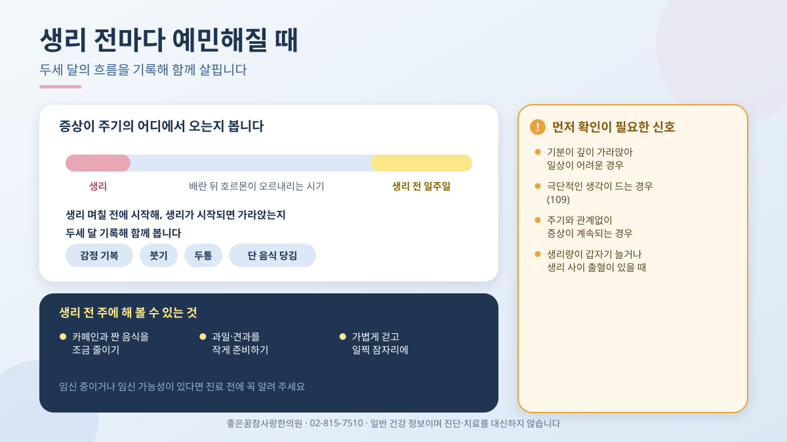

이종호 한의사 감수좋은꿈참사랑한의원 대표원장 (한의사 면허번호 19769)발행 2026-11-23 · 수정 2026-11-26
이 글의 차례
생리 전 일주일마다 예민해지고 짜증이 는다면, 먼저 증상이 생리 며칠 전에 시작해 생리가 시작되면 가라앉는지를 두세 달 기록해 함께 봅니다. 이 흐름이 확인되면 잠, 식사, 스트레스처럼 그 시기를 더 힘들게 하는 요인을 하나씩 살핍니다. 작은 일에도 짜증이 나고 몸이 붓고 단 것이 당긴다는 분이 많고, 매달 반복되면 일과 가족 관계에도 부담이 됩니다.
생리 전 예민함은 성격 탓이나 참으면 되는 일로 넘기기 쉽지만, 매달 같은 시기에 되풀이된다는 점이 중요한 단서입니다. 같은 짜증이라도 생리 시작과 함께 사라지는 경우와 주기와 상관없이 한 달 내내 이어지는 경우는 살피는 방향이 다릅니다. 그래서 첫 상담에서는 증상의 세기보다 언제 시작해 언제 끝나는지를 먼저 함께 확인합니다.
왜 이런 불편이 생길 수 있나요
- 배란 뒤 생리 전까지는 호르몬이 크게 오르내리는 시기라, 이 변화에 예민한 분은 감정 기복, 붓기, 식욕 변화를 겪을 수 있습니다.
- 대개 생리 시작 1~2주 전부터 나타나 생리가 시작되고 며칠 안에 가라앉는 흐름을 보입니다.
- 잠이 부족하거나 스트레스가 많은 달에는 같은 변화도 더 크게 느껴지기 쉽습니다.
- 카페인, 짠 음식, 술은 붓기와 예민함을 더할 수 있습니다.
- 한의학에서는 생리 주기를 잠, 소화, 긴장 상태와 함께 하나의 흐름으로 살핍니다.
배란 뒤에는 몸에 물이 머무르기 쉬워 붓기와 더부룩함이 생기고, 몸이 무거워지면 마음의 여유도 함께 줄어듭니다. 그래서 생리 전 예민함을 볼 때 기분과 몸의 불편을 따로 떼어 보지 않으려 합니다.
생리 전 예민함은 다른 기분 변화와 어떻게 다른가요?
가장 큰 차이는 시기입니다. 생리 전 예민함은 생리 직전까지 올라왔다가 생리가 시작되면 며칠 안에 가라앉고, 생리가 끝난 뒤 한두 주는 비교적 편안한 구간이 이어집니다. 이 편안한 구간이 있는지가 첫 번째 단서입니다.
한 달 내내 기분이 가라앉아 있거나 걱정이 이어지는데 생리 전에 조금 더 심해지는 정도라면, 우울감이나 불안이 바탕에 있고 생리 전에 도드라지는 것일 수 있습니다. 이때는 주기만 볼 것이 아니라 평소 기분을 함께 살핍니다.
생리 전 며칠 동안 일을 쉬어야 할 만큼 절망스럽거나, 가족과 크게 부딪혀 관계가 흔들릴 정도라면 증상이 무거운 편입니다. 이런 경우에는 부인과나 정신건강의학과 상담을 함께 받아 보시길 권하고, 한의원에서는 그 진료와 나란히 잠과 몸 상태를 살핍니다.
피로, 추위 타기, 체중 변화가 함께 있다면 갑상선 기능 변화도 감정 기복을 만들 수 있어 건강검진 결과를 함께 봅니다. 피임약을 새로 시작하거나 바꾼 뒤 기분이 달라졌다면 그 날짜도 기록에 적어 두세요.
먼저 이렇게 여쭙니다
- 예민함은 생리 며칠 전부터 시작되나요?
- 생리가 시작되면 증상이 줄어드나요?
- 붓기, 가슴 통증, 두통, 단 음식 당김이 함께 있나요?
- 그 시기에 잠은 어떤가요?
- 이 시기에 일이나 가족 관계에서 부딪히는 일이 늘었나요?
- 생리가 끝난 뒤에도 기분이 가라앉아 있는 날이 있나요?
- 피임약이나 호르몬제를 드시나요?
생리 전에 한 번씩 예민해지는 것은 흔한 일이어서 그 자체를 이상하게 여기실 필요는 없습니다. 다만 그 정도가 해마다 커지거나, 예전엔 없던 두통과 불면이 함께 붙기 시작했다면 지금의 생활에서 무엇이 달라졌는지 함께 짚어 볼 때입니다. 잠, 일, 식사 가운데 바뀐 것이 있는지 먼저 떠올려 보세요.
스스로 점검해 보세요
- 생리 시작 일주일 전쯤부터 작은 일에도 짜증이나 눈물이 난다
- 생리가 시작되고 2~3일 안에 기분이 한결 가벼워진다
- 그 시기에 몸이 붓고 가슴이 당기거나 두통이 온다
- 단 음식이나 짠 음식이 평소보다 많이 당긴다
- 그 주에는 잠들기 어렵거나 자주 깬다
- 생리가 끝난 뒤에도 2주 넘게 기분이 계속 가라앉아 있다
앞의 다섯 가지가 주기에 맞춰 되풀이된다면 생리 전 변화로 보고 기록부터 함께 정리합니다. 마지막 항목은 생리 주기와 별개로 기분 상태를 먼저 살펴야 할 수 있는 단서라, 해당한다면 정신건강의학과 상담도 함께 받아 보시길 권합니다.
일상에서 먼저 해 볼 수 있는 것
- 달력이나 앱에 생리 전 기분과 몸 상태를 석 달 정도 적어 보기
- 생리 전 주에는 카페인과 짠 음식을 조금 줄이기
- 단 음식이 당길 때를 대비해 과일이나 견과를 작게 준비하기
- 그 주에는 가벼운 걷기를 꾸준히 하고 잠자리에 일찍 들기
- 중요한 약속은 조금 여유 있게 잡기
기록은 하루 1분이면 충분합니다. 예민함·붓기·잠을 0~3점으로 적고 생리 시작일에 동그라미를 쳐 두면, 두세 달 뒤 생리 전 며칠부터 점수가 올라가는지가 한눈에 보입니다. 그 시기를 미리 알면 중요한 회의나 가족 행사를 조금 피해서 잡을 수도 있습니다.
그 주를 조금 덜 힘들게 보내려면 어떻게 할까요?
생리 전 주에는 같은 일도 더 버겁게 느껴집니다. 그래서 감정을 꾹 참는 힘을 기르기보다, 감정을 건드리는 조건을 미리 줄이는 쪽이 현실적입니다. 아래 순서로 하나씩 해 보세요.
첫째, 끼니 간격을 일정하게 지킵니다. 배고픈 시간이 길어지면 짜증이 쉽게 올라오고 단 음식도 더 당깁니다. 점심과 저녁 사이가 길다면 오후에 삶은 달걀이나 두유처럼 가벼운 간식을 정해 두면 도움이 될 수 있습니다.
둘째, 잠자리에 드는 시각을 평소보다 30분 앞당깁니다. 생리 전에는 자다 깨는 일이 늘기 쉬워 같은 시간을 누워 있어도 덜 잔 느낌이 남습니다. 잠들기 한 시간 전에는 화면 밝기를 낮추고 따뜻한 물로 씻어 몸을 풀어 주세요.
셋째, 감정이 올라오는 순간에 쓸 짧은 방법을 하나 정해 둡니다. 자리를 잠깐 떠나 물을 마시거나 숨을 길게 내쉬며 다섯까지 세는 것처럼 간단할수록 실제로 쓰기 쉽습니다. 이번 주는 그럴 수 있는 주라고 스스로에게 말해 주는 것도 마음을 덜 몰아세우는 데 보탬이 될 수 있습니다.
넷째, 몸을 조금이라도 움직입니다. 붓기와 무거움이 심한 날일수록 20분 정도 걷거나, 저녁에 다리를 벽에 올리고 쉬는 시간을 두면 무거운 느낌을 덜어 보는 데 보탬이 될 수 있습니다.
가까운 사람과는 어떻게 이야기하면 좋을까요?
생리 전 예민함은 혼자 견디기보다 가까운 사람과 미리 나누면 부담이 줄어듭니다. 다만 화가 난 순간에 설명하면 변명처럼 들리기 쉬워, 마음이 편한 주에 기록을 보여 주며 이야기하는 편이 좋습니다.
예를 들어 '생리 전 사나흘은 내가 예민해질 수 있으니, 그때는 저녁 설거지를 맡아 줬으면 좋겠다'처럼 시기와 바라는 일을 구체적으로 말해 보세요. 막연히 이해해 달라고 하는 것보다 서로 덜 서운할 수 있습니다.
직장에서는 사정을 다 말하기 어려운 경우가 많습니다. 그럴 때는 그 주에 중요한 발표나 협상을 몰아 잡지 않도록 일정을 미리 조정하고, 퇴근 뒤에는 혼자 쉬는 시간을 짧게라도 확보해 두는 것만으로도 도움이 될 수 있습니다.
아이를 키우는 분이라면 그 주만큼은 집안일의 기준을 조금 내려놓으셔도 괜찮습니다. 모든 것을 평소처럼 해내려고 할수록 지치고, 지칠수록 작은 일에 더 날카로워지기 쉽습니다.
예를 들면 이런 경우입니다
- 예를 들어 마감이 몰리는 주와 생리 전 주가 겹치는 직장인이라면, 잠든 시각과 카페인 양, 야근 횟수를 함께 여쭙고 그 주에 줄일 수 있는 것부터 찾습니다.
- 예를 들어 생리 전마다 아이에게 크게 화를 내고 나서 후회한다는 육아 중인 분이라면, 그 시기의 잠과 식사, 혼자 쉬는 시간이 있는지를 함께 살피고 가족과 나눌 수 있는 일을 정리해 봅니다.
- 예를 들어 시험을 앞둔 수험생이 생리 전 주마다 집중이 어렵고 예민해진다면, 시험 일정과 주기를 나란히 적어 보고 그 주의 공부량과 잠을 미리 조정하는 방법을 이야기합니다.
- 예를 들어 교대 근무로 잠자는 시간이 매주 바뀌는 분이라면, 생리 전 주와 야간 근무가 겹친 달에 증상이 더 컸는지를 기록에서 함께 찾아보고 그 주의 근무 뒤 쉬는 방법부터 정합니다.
얼마나 지켜보고, 언제 상담할까요
- 가벼운 예민함이라면 두세 주기 동안 기록하며 카페인·잠·걷기를 조절해 보고 변화를 지켜볼 수 있습니다.
- 두세 주기를 기록해도 매달 일이나 관계에 지장이 이어진다면 상담을 받아 보시길 권합니다.
상담을 망설이는 분들은 대개 이 정도로 가도 되나 하는 마음을 갖고 계십니다. 매달 같은 시기에 일이나 관계가 흔들리고 그 때문에 생리 전 주가 다가오는 것 자체가 두렵다면, 이미 살펴볼 이유가 충분합니다. 기록이 아직 없더라도 기억나는 만큼 말씀해 주시면 그다음 주기부터 함께 적어 가면 됩니다.
한의원에서 함께 살필 수 있는 경우
- 생리 전 감정 기복이 일상에 부담이 되는 경우 생리 주기와 잠, 스트레스를 함께 살핍니다.
- 붓기와 무거움이 반복되는 경우 식사와 몸의 순환 상태를 함께 살핍니다.
- 생리 전 두통이나 소화 불편이 함께 오는 경우 몸 전체의 리듬을 함께 살핍니다.
좋은꿈참사랑한의원에서는 처음 오시면 모든 분께 그렇듯 맥부터 짚으며 생리 주기와 증상이 시작되고 끝나는 날, 잠과 식사, 요즘 가장 부담되는 일을 충분히 여쭙고, 필요하다고 판단되면 혀와 배의 상태도 함께 살핍니다.
침, 온열, 한약 상담 가운데 상태에 맞는 방법을 정하고, 부인과 검사가 필요하다고 판단되면 먼저 안내합니다. 한약은 몸 상태를 살핀 뒤 필요하다고 판단될 때 상담하며, 효과를 미리 단정하지 않습니다. 다음 주기까지 기록해 둘 항목도 함께 정합니다.
임신 가능성이 있거나 피임약·호르몬제·정신건강의학과 약 등을 드시고 있다면 상담 전에 먼저 알려 주세요. 드시던 약은 처방한 의사와 상의 없이 줄이거나 끊지 않습니다. 비용이나 보험 적용이 궁금하다면 방문 전 전화로 확인해 주세요.
첫 진료에서는 무엇을 함께 보나요?
첫 진료에서는 기분 이야기만 듣지 않고, 생리 전 주에 몸이 어떻게 달라지는지를 차례로 여쭙니다. 잠이 얕아지는지, 변비나 설사가 생기는지, 손발이 차지는지, 얼굴이 달아오르는지처럼 사소해 보이는 변화가 실마리가 되는 경우가 많습니다.
대표원장은 맥을 '지금 몸이 어떻게 버티고 있는지 비춰 주는 그림자'에 빗댑니다. 그래서 맥 하나로 결론을 내리지 않고, 혀의 색과 배를 눌렀을 때 단단하거나 불편한 자리, 그 주의 잠을 함께 맞춰 봅니다. 생리 중이라 배를 살피는 것이 불편하시면 미리 말씀해 주세요.
치료를 정할 때는 그 시기에 가장 힘든 것이 무엇인지를 기준으로 삼습니다. 잠이 먼저 무너진다면 잠을, 붓기와 두통이 먼저라면 몸의 무거움을 먼저 살피는 식입니다. 한 번에 모든 것을 바꾸려 하기보다 다음 주기까지 해 볼 한두 가지를 함께 고릅니다.
이렇게 기록해 오시면 상담이 쉬워집니다
- 최근 두세 달의 생리 시작일과 기간
- 예민함, 붓기, 두통이 시작되고 끝난 날
- 그 시기의 잠든 시간과 깬 횟수
- 그 시기에 특히 힘들었던 상황(일, 가족, 잠)
- 복용 중인 피임약·호르몬제·진통제
기분이 편했던 날도 0점으로 꼭 적어 두세요. 편한 날이 언제부터 언제까지인지 보여야 생리 전 변화인지, 한 달 내내 이어지는 변화인지 구분할 수 있습니다.
매달 같은 주가 돌아올 때마다 마음을 다잡느라 그동안 애쓰셨을 겁니다. 다음에 오시면 기록에서 편했던 날이 언제부터 언제까지였는지부터 함께 보겠습니다.
이런 증상은 먼저 확인이 필요합니다
- 기분이 깊이 가라앉아 일상이 어렵거나, 생리가 끝난 뒤에도 2주 넘게 이어지는 경우
- 스스로를 해칠 생각이 들면 ☎ 109로 바로 연락하세요.
이런 신호가 있으면 한의원보다 가까운 병원이나 응급실을 먼저 찾으세요.
함께 읽으면 좋은 글
- 생리 전 증후군(PMS)으로 생리 일주일 전마다 몸과 마음이 흔들릴 때는 무엇을 살피나요?
- 생리 전만 되면 식욕이 폭발하고 단 음식이 당길 때는 무엇을 살피나요?
- 생리 전마다 가슴이 붓고 아픈 유방통은 어떻게 살피고, 언제 검사를 받아야 하나요?

여쭙는 것
- 예민함은 생리 며칠 전부터 시작되나요?
- 생리가 시작되면 증상이 줄어드나요?
- 붓기, 가슴 통증, 두통, 단 음식 당김이 함께 있나요?
생활에서 해 볼 것
- 달력이나 앱에 생리 전 기분과 몸 상태를 석 달 정도 적어 보기
- 생리 전 주에는 카페인과 짠 음식을 조금 줄이기
- 단 음식이 당길 때를 대비해 과일이나 견과를 작게 준비하기
한의원에서 함께 살필 것
- 생리 전 감정 기복이 일상에 부담이 되는 경우 생리 주기와 잠, 스트레스를 함께 살…
- 붓기와 무거움이 반복되는 경우 식사와 몸의 순환 상태를 함께 살핍니다.
- 생리 전 두통이나 소화 불편이 함께 오는 경우 몸 전체의 리듬을 함께 살핍니다.
먼저 확인이 필요한 신호
- 기분이 깊이 가라앉아 일상이 어렵거나, 생리가 끝난 뒤에도 2주 넘게 이어지는 경우
- 스스로를 해칠 생각이 들면 109로 바로 연락하세요.
한눈에 보는 표
| 구분 | 핵심 |
|---|---|
| 여쭙는 것 | 예민함은 생리 며칠 전부터 시작되나요? 생리가 시작되면 증상이 줄어드나요? |
| 생활에서 해 볼 것 | 달력이나 앱에 생리 전 기분과 몸 상태를 석 달 정도 적어 보기 생리 전 주에는 카페인과 짠 음식을 조금 줄이기 |
| 한의원에서 함께 살필 것 | 생리 전 감정 기복이 일상에 부담이 되는 경우 생리 주기와 잠, 스트레스를 함께 살핍니다. 붓기와 무거움이 반복되는 경우 식사와 몸의 순환 상태를 함께 살핍니다. |
| 먼저 확인이 필요한 신호 | 기분이 깊이 가라앉아 일상이 어렵거나, 생리가 끝난 뒤에도 2주 넘게 이어지는 경우 스스로를 해칠 생각이 들면 109로 바로 연락하세요. |
자주 묻는 질문
기록은 얼마나 해야 하나요?
두세 달 정도 기록하면 증상이 주기와 맞물리는지 함께 보기 좋습니다.
부인과 진료와 함께 받아도 되나요?
네. 부인과 검사 결과가 있으면 가져오시면 함께 참고합니다.
한약을 먹으면 생리 전 예민함이 사라지나요?
사람마다 다르며 효과를 미리 단정하지 않습니다. 임신 가능성과 복용 중인 약을 먼저 확인하고, 주기 기록과 몸 상태를 살핀 뒤 필요하다고 판단될 때 상담합니다.
생리 전 예민함은 나이가 들면 달라지나요?
사람마다 다릅니다. 출산 뒤나 40대 이후 주기가 바뀌면서 양상이 달라지는 분도 있어, 지금의 주기와 증상을 기준으로 함께 살핍니다.
좋은꿈참사랑한의원은 재진 때 지난번 이야기부터 이어서 여쭙니다. 진료시간과 예약은 오시는 길에서 확인하세요.
어디서 상담받을 수 있나요?
좋은꿈참사랑한의원은 서울 동작구 만양로2길 2 신성빌딩 3층·5층(서울 동작구 상도동, 7호선 상도역 3번 출구 근처)에 있습니다. 한의사 3명(이종호 대표원장, 조영기 수석진료원장, 정원영 진료원장)이 진료합니다. 진료시간은 평일 09:30~20:00(점심 13:00~14:00), 토·일·공휴일 09:30~15:00이며, 방문 전 전화로 확인을 권합니다. 예약은 네이버 예약, 카카오톡 상담, 전화 02-815-7510로 받습니다.
이 글은 일반적인 건강 정보이며 개인의 진단이나 치료를 대신하지 않습니다. 증상이 있거나 복용 중인 약이 있다면 진료를 통해 확인하세요. 치료 효과는 개인마다 다를 수 있습니다.
작성 기준: 일반적으로 알려져 있는 건강 정보를 참고해 정리했습니다(대표원장 감수). 증상 기록은 1~2주 동안 하루 1회, 비슷한 시간에 적어 오시면 지난 상태와 비교하기 쉽습니다.